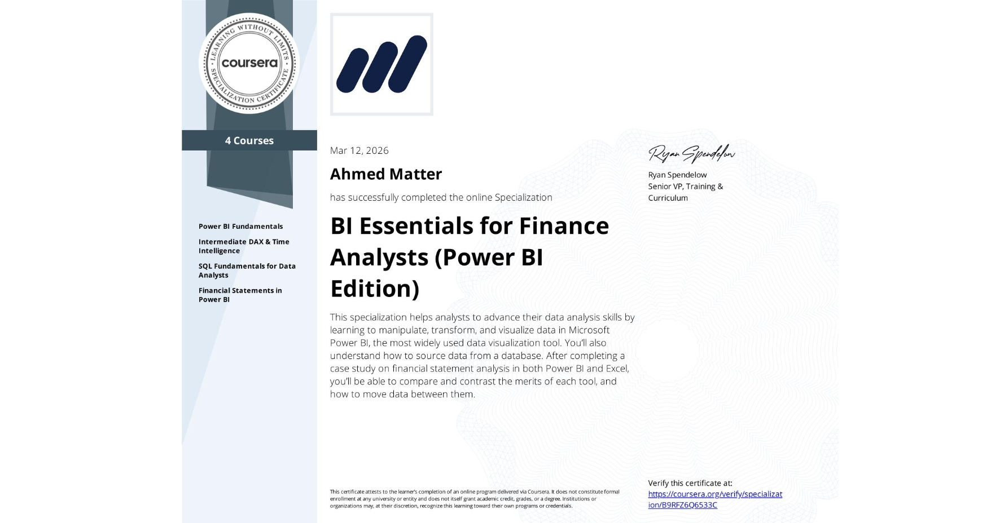
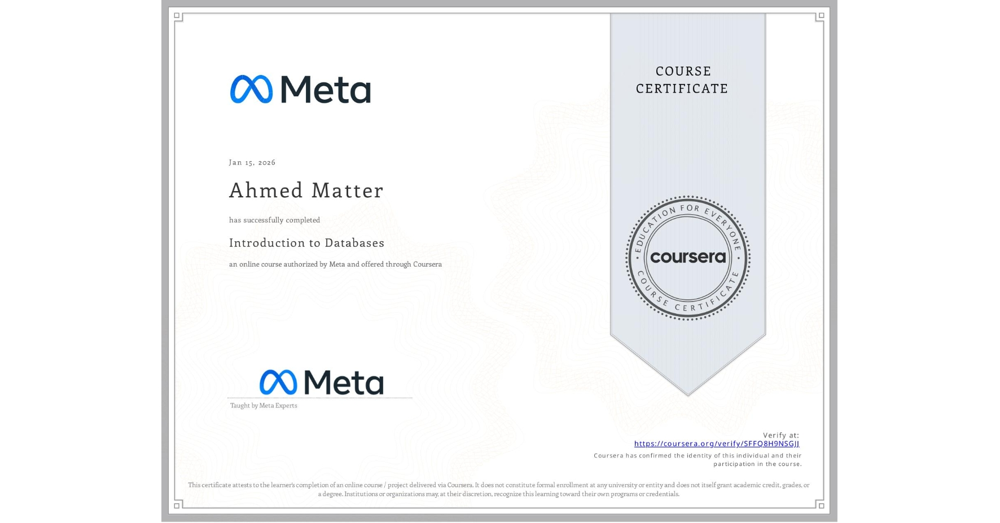
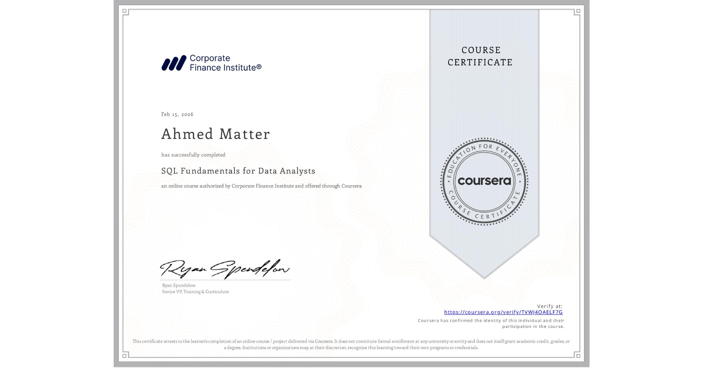
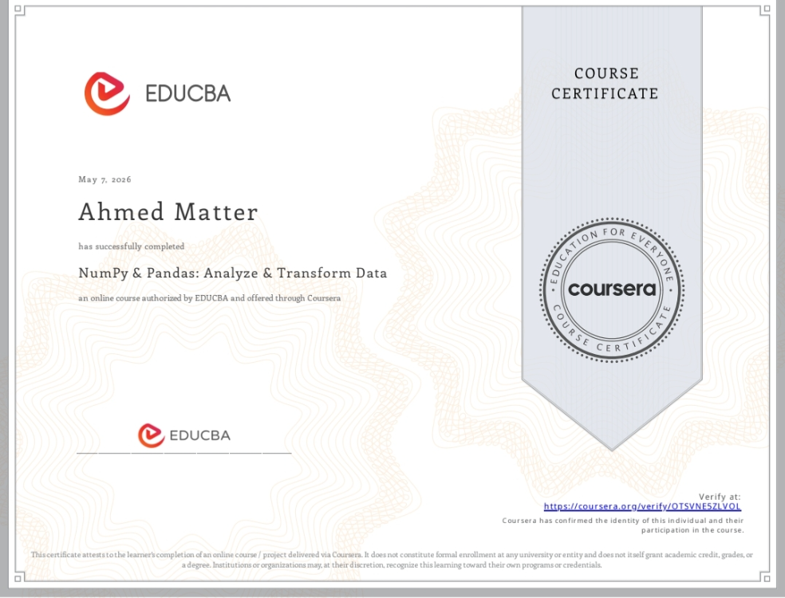
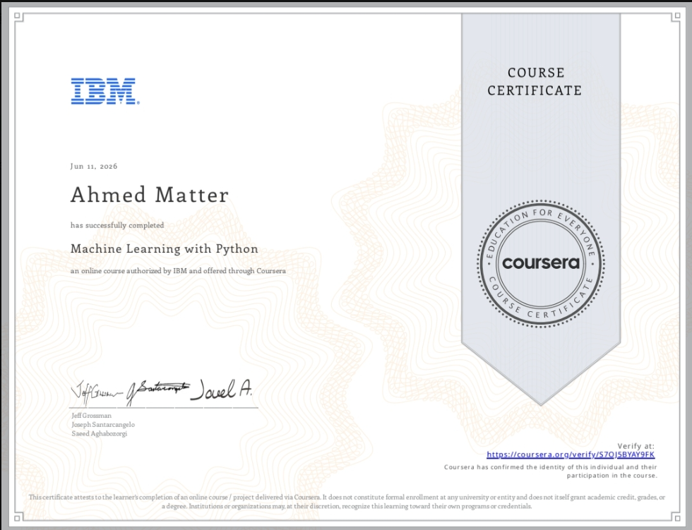
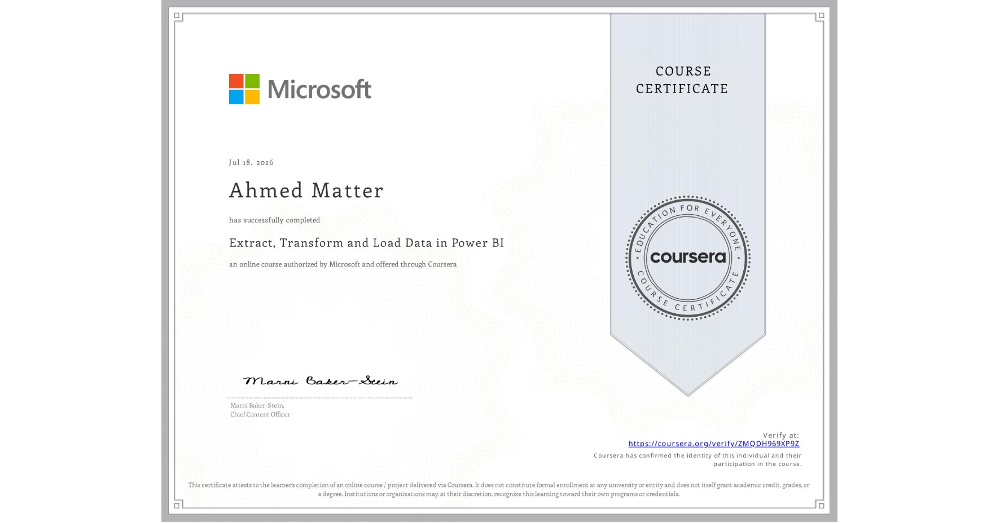
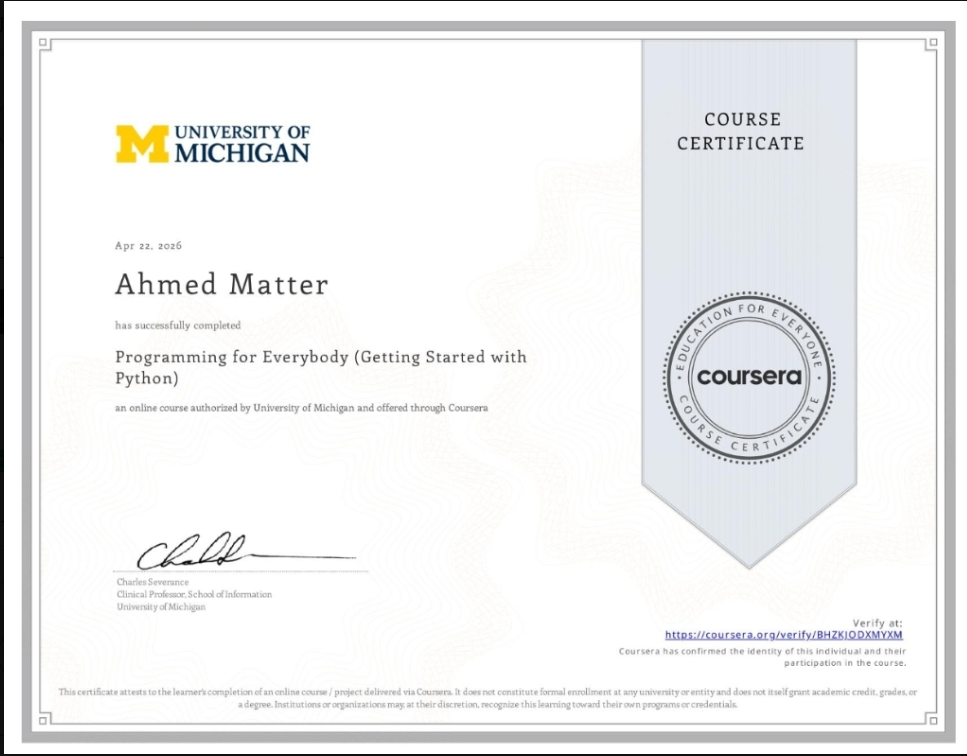
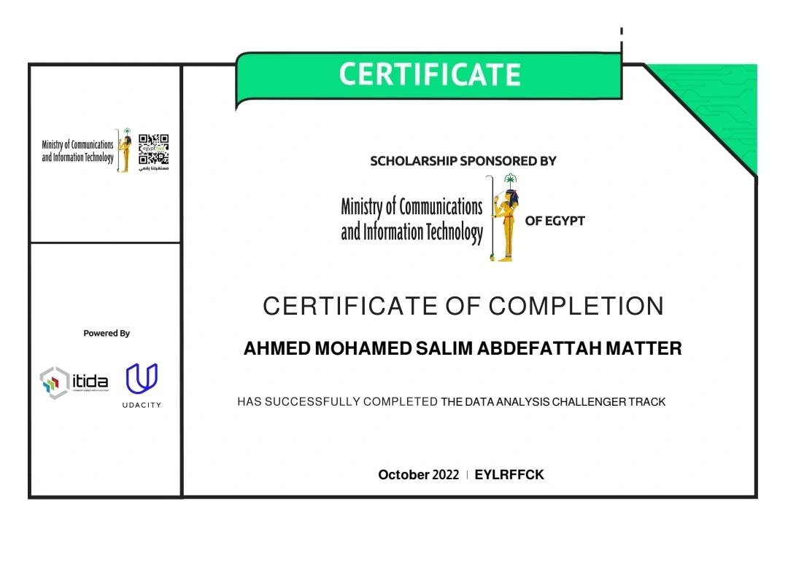

Certificates & Development الشهادات و التطوير المهني

BI Essentials for Finance Analysts
Gained advanced expertise in financial statement analysis, corporate valuation, and financial modeling.
إتقان تحليل القوائم المالية، تقييم الشركات، وبناء النماذج المالية المتقدمة.
View Certificateعرض الشهادة
Introduction to Databases
Concepts and principles that underpin how databases work.
المفاهيم والمبادئ التي تقوم عليها آلية عمل قواعد البيانات.
View Certificateعرض الشهادة
SQL Fundamentals for Data Analysts
Validates proficiency in querying, extracting, and manipulating relational databases to transform raw data.
شهادة متخصصة في أساسيات لغة SQL وتغطي كيفية استخراج وتنظيم البيانات الخام إلى رؤى عملية.
View Certificateعرض الشهادة
NumPy & Pandas: Analyze & Transform Data
Focused on numerical operations, memory optimization, and cleaning Pandas DataFrames effectively.
التركيز على العمليات الرقمية ومعالجة البيانات باستخدام مكتبات بايثون بكفاءة.
View Certificateعرض الشهادة
Data Visualization with Python
Implement data visualization techniques using Matplotlib, Seaborn, and Folium to tell a stimulating story.
بناء وتصميم الرسوم البيانية التفاعلية بلغة Python لعرض نتائج تحليل البيانات بأسلوب مؤثر.
View Certificateعرض الشهادة
Machine Learning with Python
Explain key concepts, tools, and roles involved in machine learning, including supervised learning.
تغطية شاملة لمبادئ تعلم الآلة وتقنيات التعلم الموجه وغير الموجه.
View Certificateعرض الشهادة
Extract, Transform and Load in Power BI
Configuring data sources, cleaning data for modeling, and managing queries via Advanced Editor.
تجهيز مصادر البيانات وتنظيفها وتعديل الأكواد عبر المحرر المتقدم في Power BI.
View Certificateعرض الشهادة
Programming for Everybody (Python)
Foundations of programming, data structures, and automation using Python.
أساسيات البرمجة، هياكل البيانات، والأتمتة باستخدام لغة بايثون.
View Certificateعرض الشهادة
Data Analysis and Visualization
Designing accessible dashboards and seamlessly integrating effective visualizations.
تصميم تقارير ولوحات قيادة شمولية وتوظيفها بفاعلية لتحليل البيانات واستخلاص الرؤى.
View Certificateعرض الشهادة
Data Analysis Challenger Track
Practical problem-solving, data cleaning workflows, and visualization fundamentals.
حل المشكلات العملية، مسارات عمل تنظيف البيانات، وأساسيات التصور البصري.